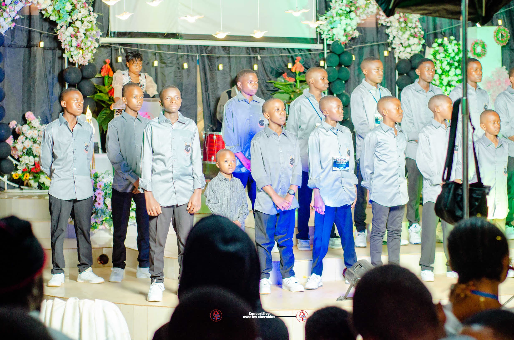
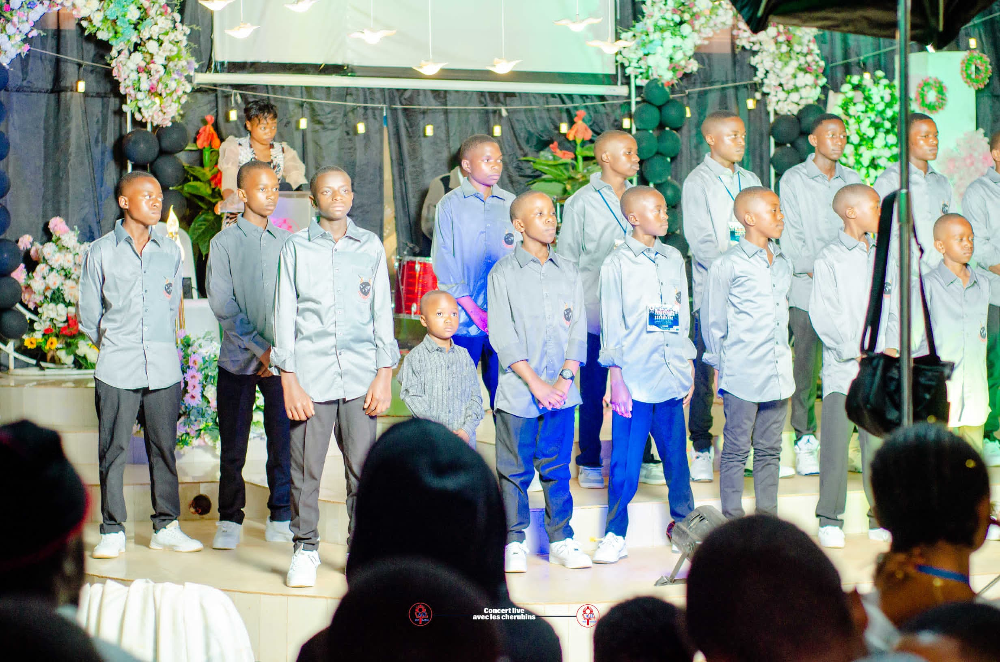
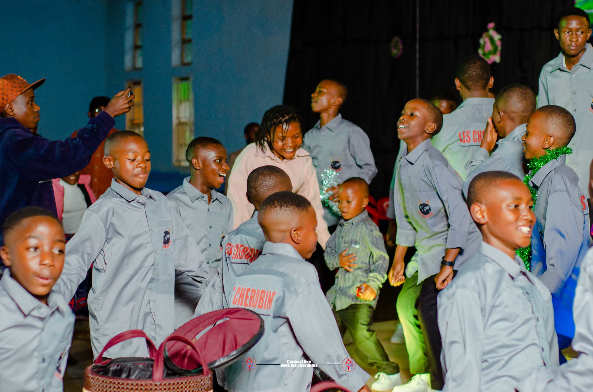
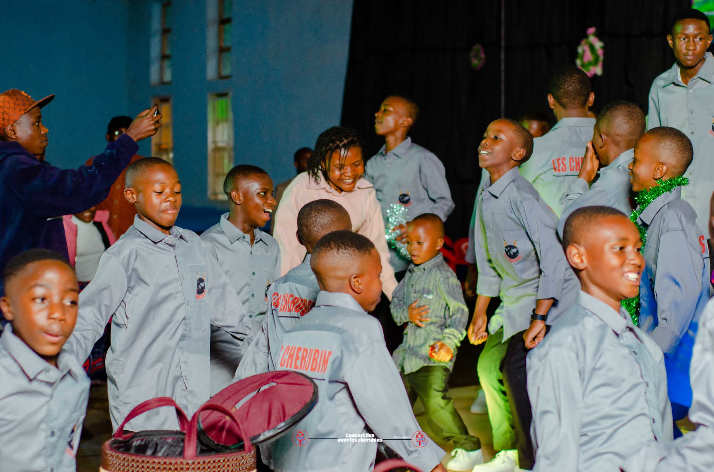
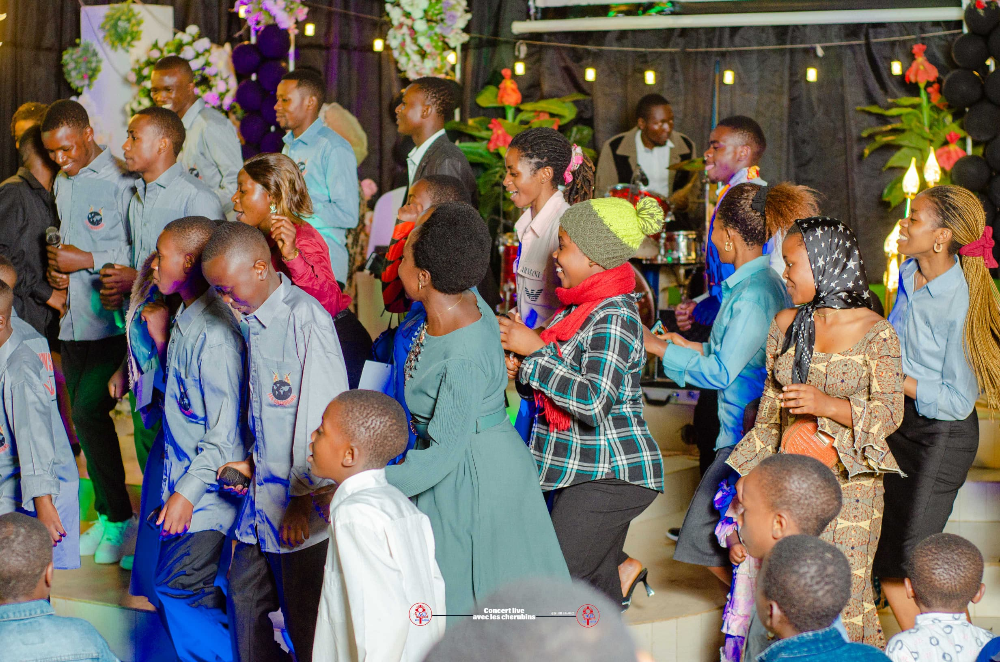
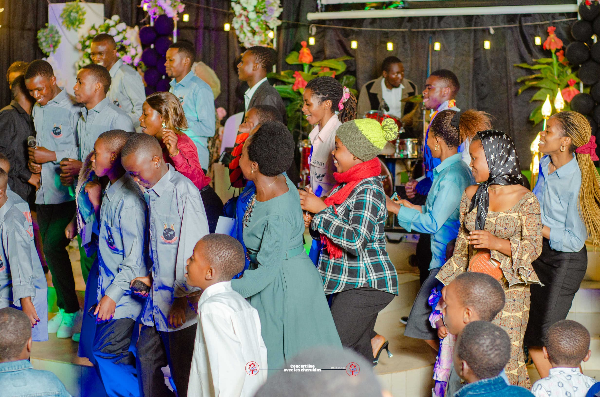
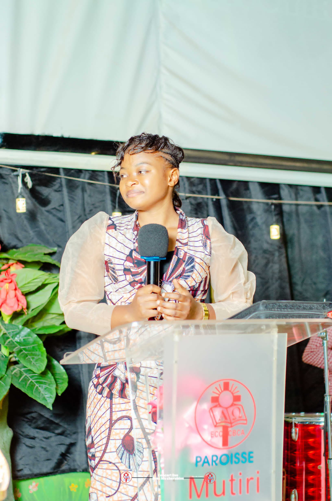
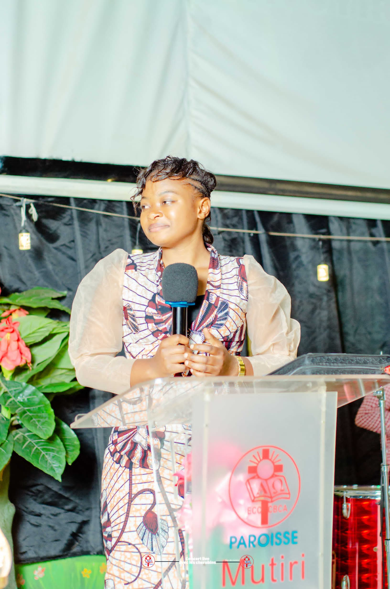

LES CHERUBINS
L'orchestre LES CHERUBINS est une formation musicale reconnue pour son talent et son engagement dans la musique chrétienne. Alliant la maîtrise vocale et instrumentale, ils se distinguent par leur capacité à transmettre des messages profonds d'espoir, de foi, de paix, d'affermissement et d'amour de Dieu à travers leurs compositions inspirées de la parole de divine. Chaque membre de l'orchestre apporte une touche unique, créant une harmonie qui captive et inspire. Leur passion pour la musique sacrée et leur dévouement à partager des valeurs spirituelles font d'eux un véritable pilier dans le paysage musical chrétien.
Souvenir d'un moment inoubliable
Le 27 octobre 2024, le temple babptiste de la CBCA Mutiri a vibré au rythme d'un événement extraordinaire et insolite: un grand concert animé par le talentueux orchestre LES CHERUBINS. Cette journée, riche en louange, en adoration et en communion fraternelle, demeure gravée dans nos mémoires comme un véritable témoignage de la grâce de Dieu. Nous adressons nos sincères remerciements à tous ceux qui ont participé à faire de cet événement un succès éclatant, marquant l'histoire de notre orchestre.
Deroulement
Ouverture
Le programme a démarré avec une magnifique prélude interprétée par Praise team, qui a introduit les festivités avec gloire. Leur performance inspirante a su captiver l'attention du public et créer une atmosphère chaleureuse et engageante pour le reste du concert.
Présentation
L'après-midi a débuté sous des belles auspices lorsque l'orchestre les chérubins a choisi de confier l'animation de son concert à une invintée speciale: madame Felicity Kavughe. Celle-ci, avec son éloquence, a posé les bases d'un événement mémorable, marquant le commencement de cette célébration musicale.
Prédication
Un moment fort du concert fut la prédication apportée par le pasteur associé de la place, Bedris Kambale. Avec profondeur et clarté, il a su transmettre un message, puissant et édifiant qui a touché les coeurs des participants, tiré dans Matthieu 5:13 et Luc 14:34. Ce temps de méditation spirituelle a ajouté une dimension unique et significative à l'événement, renforçant son impact auprès du public.
Les chorales invintées
Une manifestation de cette ampleur ne saurait être possible sans la collaboration d'autres talents. Les jeunes organisateurs de l'événement ont invité plusieurs chorales, parmi lesquelles la chorale Asnach de la CBCA Francophone Kyavuhiri, la chorale Tumaini et Praise team. ces deux dernières sont de la même paroisse que les organisateursde l'événement. Ensemble, ces groupes ont démontré que la musique est une oeuvre collective, où chaque voix apporte une touche unique et essentielle pour sublimer l'activité.
Prestation des chérubins
Les organisateurs ont joué un rôle central dens le succès de cet événement exceptionnel. Grâce à une planification méticulleuse rt une coordination sans faille, ils ont su créer une ambiance conviviale et professionnelle qui a largement contribué à la réussite du concert. Leur attention porté aux moindres détails, qu'il s'agisse de la disposition des lieux, de l'accueil chaleureux réservé aux invités ou encore de la gestion fluide du programme, a été exemplaire. Leur dévouement et leur passsion ont transformé ce concert en une véritable célébration mémorable, marquant durablement les esprits de tous les participants.
Les instrumentalistes
Leurs instrumentalistes, sous la direction du talentueux soliste Samy Muyisa dit Saam Solo, ont offert une performance exceptionnelle qui a sublimé l'ensemble du concert. A la batterie, Ezéchiel Kitakya nommé Ezé Drum a insufflé un rythme dynamique et captivant, tandis que la guitare basse de Saam Bass et Nathan Muhiwa qui ont alterné des chancons, apportait une profondeur envoûtante aux mélodies. La virtuosité de MK au piano a ajouté une touche de grâce et d'émotion, transportant le public dans un univers musical riche et varié. Alors que Josué tenait sa guitare d'accompagnement, ensemble ces musiciens ont démontré une coordination parfaite, une passion indéniable et une maîtrise technique impressionnante, rendant chaque morceau mémorable et vibrant d'émotions. Leur contribution a véritablement transformé ce concert en une célébration inoubliable.
Equipe médiatique
Le rôle des médias a été crucial dans le rayonnement et le succès de cet événement. L'équipe dynamique dirigée par Vak Studio en charge de l'enregistrement vocal a su immortaliser chaque moment clé avec une qualité exceptionnelle permettant à l'événement de vivre pour toujours Aux commandes de la photographie, Salem a capturé des instants uniques avec son objectif, reflétant l'émotion et la beauté de chaque prestation. Grâce à la diffusion en direct orchestré par Dan Kaseso et la mise en ondes assuré par Adelard Kendakenda, l'activité a atteint un large public y compris ceux qui ne pouvaient pas être présents physiquement. Leur professionnalisme et leur dévouement ont été essentiels pour faire de ce concert un véritable succès médiatique.
Public
Le public a été un véritable acteur dans la réussite de cet événement. Composé de spectateurs venus de divers horizons, il a manifesté une énergie vibrante et une participation enthousiaste tout au long du concert. Chants, applaudissements et moments de recueillement ont témoigné une profonde connexion entre les artistes et les spectateurs. Leur chaleur et leur réceptivité ont créé une ambiance conviviale et inspirante, amplifiant l'impact de chaque préstation. Ce public engagé a non seulement soutenu les performances avec ferveur, mais également contribuué à faire de cet événement une célébration collective mémorable. Leur présence et leur enthousiasme resteront gravés dans les Souvenirs de tous les participants surtout des organisateurs.
Ambiance du jour
L'événement a été marqué par une ambiance à la fois festives et spirituelle, mêlant joie, inspiration, paix, amour et recueillement fraternel. Dès l'ouverture, une énergie positive et une gloire divine ont enveloppé le temple, portées par les chants, les applaudissements et les prières des participants. Les jeux de lumière, savamment orchestrés ajoutaient une touche glorieuse à chaque prestation, tandis que la musique résonnait avec une puissance qui touchait les coeurs. Les moments de méditation et de célébration ont apporté une profondeur émotionnelle, équilibrant parfaitement les instants d'exaltation. Chaque détail, des décors soignés par Kapiongo, a contribué à créer une atmosphère immersive et glorieuse. Cette ambiance unique a permis à tous, artistes comme spectateurs, de vivre une expérience profondement enrichissante et mémorable.
Album
 

 



 



 
